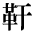

●中島敦『李陵』
●岡本かの子『雛妓』
●幸田露伴『雁坂越』
●尾崎紅葉『金色夜叉』
●夏目漱石『薤露行』
●夏目漱石『幻影の盾』
●徳冨蘆花『不如帰 小説』
●森鴎外『假名遣意見』
●森鴎外『青年』
| 1_93_79.gif |
●桑原隲蔵『支那の宦官』 ●中島敦『李陵』 |
|
|
|
1_93_80.gif |
●有島武郎『生まれいずる悩み』 ●岡本かの子『雛妓』 ●幸田露伴『雁坂越』 ●尾崎紅葉『金色夜叉』 ●夏目漱石『薤露行』 ●夏目漱石『幻影の盾』 |
|
|
1_93_81.gif |
●芥川龍之介『邪宗門』 ●徳冨蘆花『不如帰 小説』 ●森鴎外『假名遣意見』 ●森鴎外『青年』 |
|
|
2_92_6.gif |
●橋本進吉『古代国語の音韻に就いて』 |
| 2_92_7.gif |
●島崎藤村『夜明け前 第一部上』 |
|  | gaiji001.gif |
●中島敦『李陵』 |
| gaiji002.gif |
●桑原隲蔵『秦始皇帝』 |